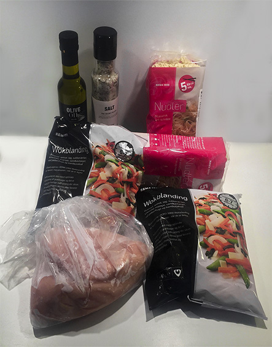

Wok med kylling

Til wok skal du bruge følgende ingredienser til ca. 3-4 personer.
- Wokblanding (hvis du har grøntsager i køleskabet, kan du også bruge dem)
- Nudler
- Salt
- Soya
- Sur/sød chilisovs
- Start med at skære kylling i tern, og steg det derefter på panden med noget olie og en smule salt.
- Sæt vand over til nudlerne, tilsæt en smule salt.
- Når kyllingen er halvvejs, begynder du at stege wokblandingen i en separat pande.
- Når kyllingen er helt færdig, tilsættes den til wokblandingen.
- Når vandet koger, tilsætter du nudlerne.
- Når du synes wokblandingen og nudlerne er færdige, så er det tid til at spise.
For at få ekstra smag, kan du tilføje soya og sur/sød chilisovs.
Denne ret kommer i alt ca. til at koste 60 kr.